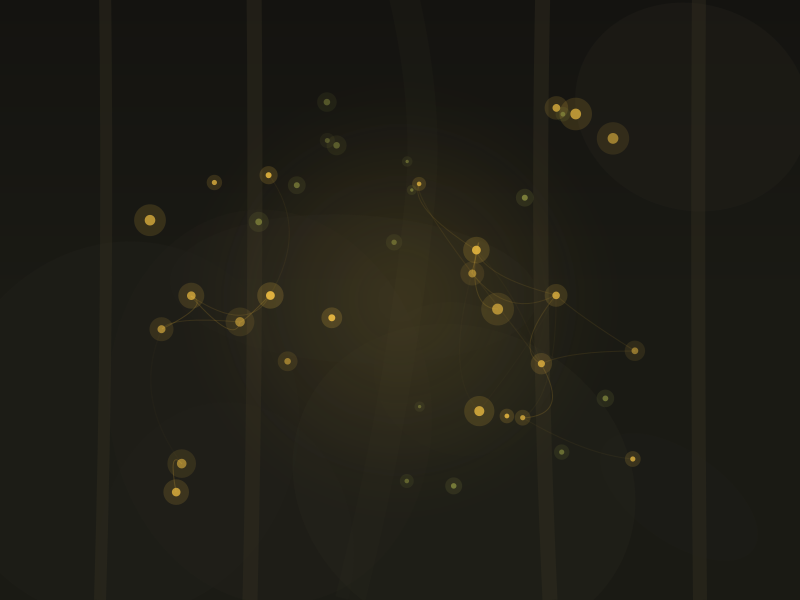

Not a Trek — A Daily Tending

Full dose — an expeditionIf a full psychedelic experience is an expedition deep into the wilderness, microdosing is more like daily gardening. The practice involves taking a fraction of a standard dose — typically one-tenth to one-twentieth — on a regular schedule. At these amounts, there should be no perceptual changes, no “trip.” The idea is that you’re gently nourishing the soil of your neural landscape — encouraging flexibility, coaxing new growth, without uprooting anything.
And it has become enormously popular. According to the 2025 RAND Psychedelics Survey, approximately 10 million U.S. adults microdosed psilocybin or other psychedelics in the past year. Among psilocybin users, 69% reported microdosing at least once. Search interest in microdosing has grown roughly 1,250% since 2015.
What People Use Microdosing For
Survey data consistently shows that microdosers report a range of motivations: managing symptoms of depression and anxiety, improving mood and emotional regulation, enhancing creativity and focus, increasing energy, and supporting personal growth. Many describe it as a subtle but noticeable shift — like the difference between a cloudy day and one where the light breaks through.
What the Science Actually Shows
Here’s where things get complicated — and where honesty matters most.
The self-reported benefits of microdosing are widespread and often enthusiastic. But controlled clinical studies have produced mixed results. Several randomized, placebo-controlled trials have found that much of the reported benefit may be driven by expectancy and placebo effects. When participants don’t know whether they received a microdose or placebo, the differences between groups often shrink dramatically.
This doesn’t mean microdosing does nothing. It means we can’t yet separate the pharmacological effect from the powerful influence of belief and ritual. In the neural jungle, it may be that the act of intentionally tending your landscape — paying attention, setting intentions, creating a practice — provides real benefits regardless of whether the substance itself is doing the heavy lifting. The gardener who shows up every morning may grow something regardless of what’s in the soil.
Common Protocols
The Fadiman Protocol: One microdose day, followed by two rest days. Repeat. This is the most widely referenced schedule, named after psychologist James Fadiman.
The Stamets Stack: Developed by mycologist Paul Stamets, this combines a psilocybin microdose with lion’s mane mushroom and niacin (vitamin B3) on a five-days-on, two-days-off schedule. Evidence for this combination is preliminary.
Intuitive dosing: Some people microdose when they feel they need it rather than on a fixed schedule. There’s no research comparing this approach to scheduled protocols.
Safety Considerations
Cardiac concerns. Serotonin 2A receptor agonists (which includes psilocybin) can affect heart valve tissue with repeated exposure. One research review has specifically called for more investigation into cardiac fibrosis and valvulopathy risk with regular microdosing.
No long-term safety data. The longest microdosing studies span weeks. We don’t have evidence about what months or years of regular microdosing might do.
Medication interactions. SSRIs, SNRIs, lithium, and MAO inhibitors can all interact with psychedelic substances, even at micro-level doses.
Dosing variability. Without pharmaceutical-grade preparations, the actual amount of active compound in a “microdose” can vary significantly, especially with natural mushrooms.
Bottom line: Microdosing is popular and many people report benefits. The controlled evidence is genuinely mixed. If you choose to explore it, do so with clear eyes about what we know and don’t know — and consult a healthcare provider, especially if you take other medications.
Important: This content is for educational purposes only and is not medical advice. Psychedelics carry real risks and are not appropriate for everyone. Always consult a qualified healthcare provider before making any decisions about psychedelic use.